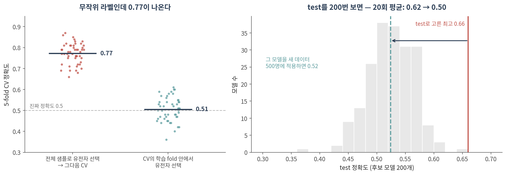
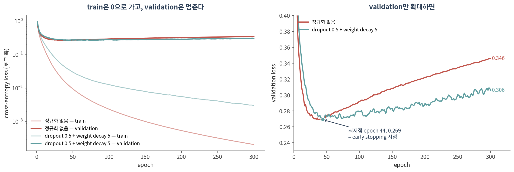
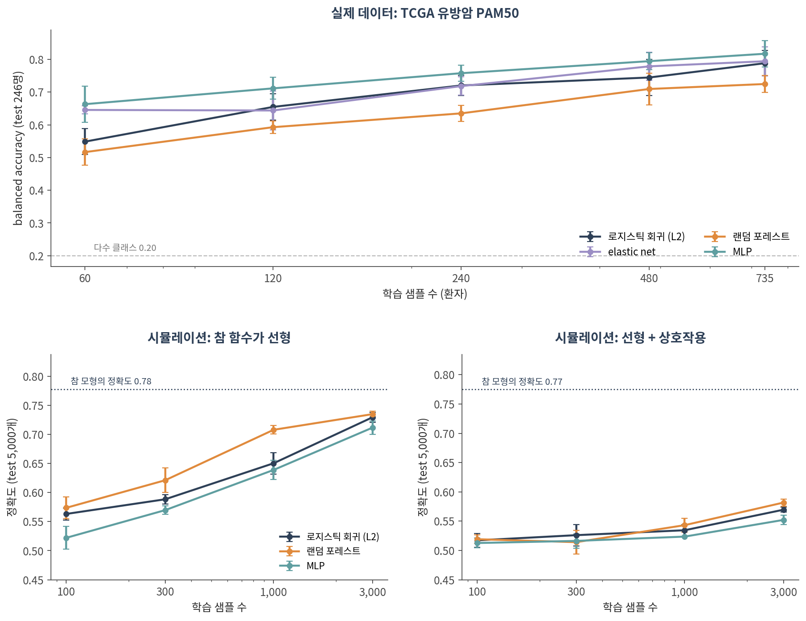
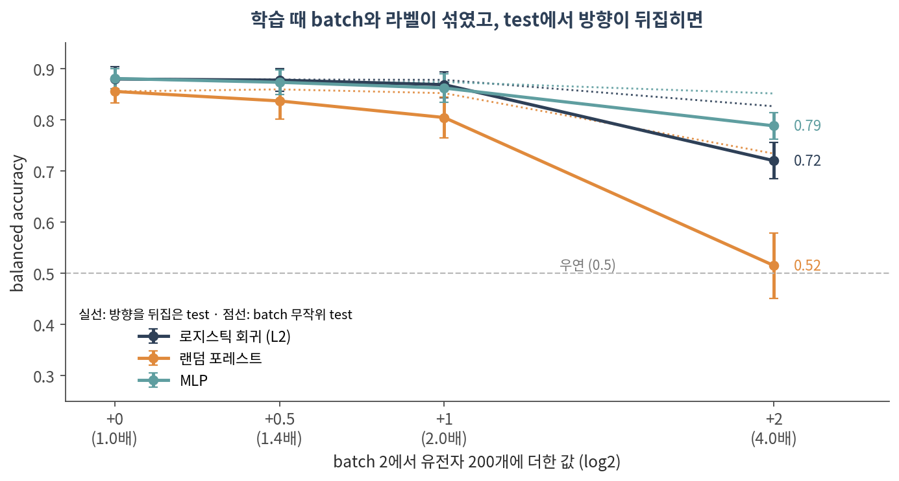

09. 학습의 실제
이 챕터를 마치면 다음을 할 수 있습니다.
- train / validation / test의 역할을 구분하고, ⚠️ test를 왜 한 번만 봐야 하는지 숫자로 말할 수 있다
- ⚠️ 특징 선택·정규화·배치 보정이 split 앞에 오면 어떤 일이 생기는지 설명할 수 있다
- 학습 곡선을 읽고 early stopping 지점을 찾을 수 있다
- weight decay, dropout, early stopping이 각각 무엇을 하는지 말할 수 있다
- ⚠️ 신경망과 정규화된 선형 모델·랜덤 포레스트를 같은 조건에서 비교할 수 있다
- ⚠️ 라벨과 섞인 batch가 모델에 지름길을 준다는 것을 설명할 수 있다
🤔 생각해볼 질문
RNA-seq 샘플이 200개 있습니다. 딥러닝으로 분류하면 로지스틱 회귀보다 나을까요? 그걸 어떻게 확인하죠?
1. 데이터를 나누는 법 ✂️

1) train · validation · test
| 이름 | 무엇에 쓰나 | 몇 번 보나 |
|---|---|---|
| train | 가중치를 학습 | 매 epoch |
| validation | 모델·하이퍼파라미터·멈출 시점을 고름 | 고를 때마다 |
| test | 최종 성능을 보고 | 한 번 |
- ⚠️ test를 보고 무언가를 고르는 순간, test는 validation이 됩니다. 그러면 보고할 숫자가 없어집니다
- 실측 (그림 오른쪽) — 라벨이 무작위인데 후보 모델 200개 중 test 최고를 고르면 test 정확도 0.62 ± 0.03, 그 모델을 새 데이터에 적용하면 0.50 ± 0.02 (20회)
- → 0.12만큼이 “고른 행위”가 만든 가짜 성능입니다
- 💡 교차검증(CV)으로 고르고 그 CV 점수를 그대로 보고하는 것도 같은 문제입니다. 고르는 CV를 바깥 CV로 한 번 더 감싸는 nested CV가 정직한 추정입니다 (Varma & Simon 2006)
2) ⚠️ 특징 선택을 나누기 전에 하면
오믹스에서 가장 흔한 실수입니다. “차등발현 유전자 상위 50개를 뽑고, 그걸로 분류기를 만들어 CV했다.”
- 실측 (그림 왼쪽) — 라벨이 무작위인데도
- ❌ 전체 샘플로 유전자를 고른 뒤 CV: 0.77 ± 0.05 (50회 중 최저 0.66)
- ✅ CV의 학습 fold 안에서만 고름: 0.51 ± 0.06
- 이유: 유전자가 2만 개면 우연히 라벨과 상관된 유전자가 수십 개는 있습니다. 전체로 고르면 test fold의 우연까지 같이 고른 것입니다
- p ≫ n일수록 심해집니다 (Ambroise & McLachlan 2002; Simon et al. 2003)
| 단계 | ❌ 누수 | ✅ 올바른 방법 |
|---|---|---|
| 유전자 선택 | 전체 샘플로 차등발현·분산 계산 | train으로만 계산해서 test에 그대로 적용 |
| 표준화 | 전체의 평균·표준편차 | train의 평균·표준편차를 test에 적용 |
| 배치 보정 | 라벨을 공변량으로 넣고 전체에 적용 | 설계에서 막고, 보정도 train 안에서 (Nygaard et al. 2016) |
| 하이퍼파라미터 | test 점수로 고름 | validation 또는 nested CV |
| 한 환자의 여러 샘플 | 샘플 단위로 무작위 split | 환자 단위로 split (GroupKFold) |
- 💡 분산 상위 유전자처럼 라벨을 쓰지 않는 필터는 누수가 훨씬 약합니다. 그래도 이 챕터의 모든 실험과 실습은 train으로만 계산합니다
3) 무엇을 n으로 셀 것인가
- 환자 20명에게서 세포 20,000개를 얻었다면, 환자를 예측하는 문제의 n은 20입니다
- ⚠️ 세포를 무작위로 나누면 같은 환자의 세포가 train과 test 양쪽에 들어갑니다 → 모델은 질병이 아니라 그 환자를 외워도 점수를 받습니다
- 단일세포 연구에서 세포를 독립 샘플로 세는 문제는 pseudoreplication으로 알려져 있습니다 (Zimmerman et al. 2021)
- → 13에서 논문을 읽을 때 가장 먼저 확인할 것 중 하나입니다
2. 과적합과 정규화 🎛️

1) p ≫ n
- 이 챕터의 데이터: TCGA 유방암 환자 981명 × 유전자 20,511개, PAM50 아형 5개 (LumA 499, LumB 197, Basal 171, Her2 78, Normal 36)
- 은닉층 하나짜리 2000 → 256 → 5 MLP도 파라미터가 513,541개 — 학습 샘플 588명의 약 870배
- ⚠️ 이 정도면 신경망은 학습 데이터를 완벽하게 외울 수 있습니다 (아래 그림의 train loss)
- 선형 모델도 마찬가지입니다. 유전자가 샘플보다 많으면 학습 데이터를 완벽히 맞히는 계수 조합이 무수히 많아서, ridge·lasso·elastic net 같은 규제로 하나를 골라야 합니다 (Zou & Hastie 2005)
2) 학습 곡선 읽기
- train loss는 끝없이 내려갑니다 — 300 epoch에서 0.0002
- validation loss는 44 epoch에서 최저(0.269)를 찍고 다시 올라 300 epoch에서 0.346
- ✅ early stopping — validation loss가 최저인 시점의 가중치를 쓰고 거기서 멈춥니다
- ⚠️ 이 데이터에서는 dropout 0.5 + weight decay 5를 넣어도 최저점은 거의 같았습니다 (0.269, 역시 44 epoch). 바뀐 것은 그 뒤에 나빠지는 속도입니다 (300 epoch에서 0.346 → 0.306)
- 💡 뒤의 모델 비교에서 validation으로 고른 MLP들은 대부분 lr 10⁻³에서 2–6 epoch만에 멈췄습니다. 이 데이터에서 가장 강한 정규화는 early stopping이었습니다
3) 정규화 도구
| 도구 | 하는 일 | 선형 모델의 짝 | PyTorch |
|---|---|---|---|
| weight decay | 가중치가 커지지 못하게 매 step 줄임 | ridge (L2) | AdamW(weight_decay=...) |
| dropout | 학습 중 뉴런을 무작위로 끔 (Srivastava et al. 2014) | — | nn.Dropout(p) |
| early stopping | validation loss 최저점에서 멈춤 | 규제 강도 λ 고르기 | 직접 구현 (실습) |
| 모델 줄이기 | 층·뉴런 수를 줄임 | 변수 수 줄이기 | — |
| 데이터 늘리기 | 가장 확실하지만 가장 비쌈 | 같음 | — |
- Adam — 파라미터마다 학습률을 자동으로 조절하는 경사하강 변형. 기본 lr = 10⁻³ (Kingma & Ba 2015)
- ⚠️ Adam에서는 L2 벌점과 weight decay가 같은 것이 아닙니다 → 둘을 분리한 AdamW를 씁니다 (Loshchilov & Hutter 2019)
3. ⚠️ 정직한 비교 ⚖️

1) 비교의 규칙
- ✅ 같은 split, 같은 test — 모델마다 다른 데이터로 평가하면 비교가 아닙니다
- ✅ 같은 튜닝 기회 — 모든 모델이 같은 validation으로 하이퍼파라미터를 고릅니다
- ✅ 아무것도 안 배운 기준선 — 다수 클래스만 찍으면 balanced accuracy 0.20. 🔗 04 §2의 null model과 같은 역할
- ✅ split을 여러 번 — 평균과 흩어짐을 같이 보고합니다
- ✅ 선형 모델은 반드시 포함합니다
이 챕터 실험의 튜닝 범위:
| 모델 | 고른 것 | 후보 |
|---|---|---|
| 로지스틱 회귀 (L2) | 규제 강도 C | 0.001, 0.01, 0.1, 1 |
| elastic net (L1:L2 = 1:1) | 규제 강도 C | 0.03, 0.1, 0.3, 1 |
| 랜덤 포레스트 | — | 트리 500개, 나머지 기본값 |
| MLP (2000 → 256 → 5) | 학습률 · weight decay · dropout · epoch | 학습률 {10⁻³, 10⁻⁴} × weight decay {10⁻⁴, 10⁻²} × dropout {0, 0.5} = 8개, epoch는 early stopping |
- ⚠️ MLP의 후보가 8개로 가장 많습니다. 튜닝 예산도 비교 조건입니다
- ⚠️ 선형 모델의 C는 후보의 끝값(1)이 자주 골렸습니다 (로지스틱 회귀 10번 중 4번, elastic net 5번) — 범위를 더 넓혔다면 조금 달라졌을 수 있습니다
2) 실측: 이 데이터에서는 누가 이겼나
학습 735명, test 246명, split 10회:
| 모델 | balanced accuracy | split 10회 중 최저 – 최고 |
|---|---|---|
| 다수 클래스만 찍기 | 0.20 | — |
| 랜덤 포레스트 | 0.725 ± 0.026 | 0.68 – 0.75 |
| 로지스틱 회귀 (L2) | 0.788 ± 0.039 | 0.73 – 0.86 |
| elastic net | 0.792 ± 0.041 | 0.73 – 0.84 |
| MLP | 0.817 ± 0.041 | 0.73 – 0.87 |
- MLP − elastic net = +0.025 ± 0.034, 10번 중 7번 MLP가 앞섬 — 차이가 split 사이의 흔들림과 비슷한 크기입니다
- ⚠️ split 하나만 봤다면 어느 결론이든 낼 수 있었습니다. split 0: elastic net 0.841 > MLP 0.793. split 2: MLP 0.866 > elastic net 0.835
- 학습 샘플을 줄여도 (그림 위) 이 데이터에서는 MLP가 elastic net과 같거나 앞섰습니다 — 60명 0.663 vs 0.645, 120명 0.711 vs 0.644, 240명 0.758 vs 0.718
- ⚠️ 라벨 자체가 발현에서 나왔다는 점도 감안해야 합니다. PAM50 아형은 유전자 50개 발현이 기준 centroid와 얼마나 닮았는지로 정한 것입니다 (Parker et al. 2009)
3) 그런데 시뮬레이션에서는 졌다
그림 아래 — 참 함수를 우리가 정해둔 데이터:
| 학습 샘플 3,000개일 때 | 로지스틱 회귀 | 랜덤 포레스트 | MLP | 참 모형 |
|---|---|---|---|---|
| 참 함수가 선형 | 0.729 | 0.735 | 0.712 | 0.778 |
| 선형 + 상호작용 | 0.570 | 0.582 | 0.552 | 0.775 |
- ⚠️ 참 함수가 선형일 때는 물론, 상호작용이 있을 때도 MLP가 가장 낮았습니다. 특징 500개 중 485개 이상이 잡음인 상태에서 곱셈 구조를 찾기에는 3,000개로도 부족했습니다
- 문헌도 비슷합니다
- 전사체로 표현형을 예측한 비교에서 표준 머신러닝이 딥러닝 표현학습보다 나았습니다 (Smith et al. 2020)
- 임상 예측 모델 체계적 문헌고찰에서 머신러닝은 로지스틱 회귀보다 나은 점이 없었습니다 (Christodoulou et al. 2019)
- 일반 표 데이터 벤치마크에서는 트리 기반 모델이 신경망보다 나은 경우가 많았습니다 (Grinsztajn et al. 2022) — 이 챕터의 유방암 데이터에서는 반대로 랜덤 포레스트가 가장 낮았습니다
- ✅ 결론: 누가 이길지는 미리 알 수 없고, 재봐야 압니다. 그래서 딥러닝 결과는 언제나 같은 조건의 선형 모델 옆에 놓고 보고합니다
Colab에서 실행합니다. 설치는 90. Colab 환경 설정 참고. 발현 파일이 약 150 MB이고, 전체 실행에 몇 분 걸립니다.
import warnings; warnings.filterwarnings("ignore")
import copy
import numpy as np, pandas as pd, torch, torch.nn as nn
from sklearn.model_selection import train_test_split
from sklearn.linear_model import LogisticRegression
from sklearn.ensemble import RandomForestClassifier
from sklearn.metrics import balanced_accuracy_score as bacc
# ── 1. TCGA 유방암 RNA-seq (cBioPortal datahub, 약 150 MB) ────────────
BASE = ("https://media.githubusercontent.com/media/cBioPortal/datahub/master/"
"public/brca_tcga_pan_can_atlas_2018/")
expr = pd.read_csv(BASE + "data_mrna_seq_v2_rsem.txt", sep="\t")
clin = pd.read_csv(BASE + "data_clinical_patient.txt", sep="\t", comment="#")
def find_col(df, *keys): # 열 이름이 조금 바뀌어도 찾도록
for c in df.columns:
if all(k in c.lower() for k in keys):
return c
raise KeyError(f"{keys} 열이 없습니다: {list(df.columns)[:10]}")
g = find_col(expr, "hugo")
expr = expr.dropna(subset=[g]).drop_duplicates(g).set_index(g)
expr = expr[[c for c in expr.columns if c.startswith("TCGA")]]
X = np.log2(expr.T.astype(float) + 1)
X.index = X.index.str[:12] # 샘플 ID → 환자 ID
y = clin.set_index(find_col(clin, "patient", "id"))[find_col(clin, "subtype")].dropna()
common = X.index.intersection(y.index)
X, y = X.loc[common], y.loc[common].astype("category").cat.codes.values
print(X.shape, np.bincount(y))
# ── 2. test는 맨 먼저 떼어두고 끝까지 건드리지 않는다 ──────────────────
X_dev, X_te, y_dev, y_te = train_test_split(X, y, test_size=0.25, stratify=y,
random_state=0)
def train_mlp(A, y_tr, V, y_va, seed=0):
torch.manual_seed(seed)
net = nn.Sequential(nn.Linear(A.shape[1], 256), nn.ReLU(), nn.Dropout(0.5),
nn.Linear(256, y.max() + 1))
opt = torch.optim.AdamW(net.parameters(), lr=1e-3, weight_decay=1e-2)
loss_fn = nn.CrossEntropyLoss()
At, yt, Vt, yv = map(torch.tensor, (A, y_tr.astype("int64"), V, y_va.astype("int64")))
best, wait = (np.inf, None), 0
for epoch in range(200):
net.train()
for idx in torch.randperm(len(At)).split(64): # 미니배치 64
opt.zero_grad(); loss_fn(net(At[idx]), yt[idx]).backward(); opt.step()
net.eval()
with torch.no_grad():
val_loss = loss_fn(net(Vt), yv).item()
if val_loss < best[0]:
best, wait = (val_loss, copy.deepcopy(net.state_dict())), 0
else:
wait += 1
if wait == 20: break # early stopping
net.load_state_dict(best[1]); net.eval()
return net
def compare(X_dev, y_dev, seed=0):
"""dev를 train/validation으로 나눠 모델을 고르고, test에서 한 번만 평가"""
X_tr, X_va, y_tr, y_va = train_test_split(X_dev, y_dev, test_size=0.2,
stratify=y_dev, random_state=seed)
genes = X_tr.var().nlargest(2000).index # train으로만 고른다
mu, sd = X_tr[genes].mean(), X_tr[genes].std() + 1e-8
A, V, T = [((d[genes] - mu) / sd).values.astype("float32")
for d in (X_tr, X_va, X_te)]
ens = [LogisticRegression(penalty="elasticnet", solver="saga", l1_ratio=0.5, C=C,
max_iter=1000, tol=1e-3, random_state=seed).fit(A, y_tr)
for C in (0.1, 1.0)] # C는 validation으로 고름
en = max(ens, key=lambda m: bacc(y_va, m.predict(V)))
rf = RandomForestClassifier(500, n_jobs=-1, random_state=seed).fit(A, y_tr)
net = train_mlp(A, y_tr, V, y_va, seed)
with torch.no_grad():
mlp_pred = net(torch.tensor(T)).argmax(1).numpy()
return {"다수 클래스": bacc(y_te, np.full_like(y_te, np.bincount(y_tr).argmax())),
"elastic net": bacc(y_te, en.predict(T)),
"random forest": bacc(y_te, rf.predict(T)),
"MLP": bacc(y_te, mlp_pred)}
# ── 3. 전체 dev(735명)로 한 번, 그리고 줄여가며 ────────────────────────
rows = {len(y_dev): compare(X_dev, y_dev)}
for n in [60, 120, 240]:
X_n, _, y_n, _ = train_test_split(X_dev, y_dev, train_size=n, stratify=y_dev,
random_state=0)
rows[n] = compare(X_n, y_n)
print(pd.DataFrame(rows).T.sort_index().round(3))
# ── 4. 누수 점검: 라벨을 섞으면 모두 0.2 근처로 떨어져야 정상 ─────────
# y_te = np.random.default_rng(0).permutation(y_te)
# y_dev = np.random.default_rng(1).permutation(y_dev)
# print(compare(X_dev, y_dev))확인할 것:
- 첫 줄
(981, 20511) [171 78 499 197 36]— 환자 981명, 아형 5개 (Basal, Her2, LumA, LumB, Normal 순) - dev 735명(그중 학습 588명): elastic net 0.835, MLP 0.839, 랜덤 포레스트 0.724, 다수 클래스 0.20
- 줄이면 순위가 흔들립니다 — 120명에서는 MLP 0.747 > elastic net 0.581인데, 240명에서는 elastic net 0.702 > MLP 0.625.
compare()의seed와 줄이는random_state를 바꿔 몇 번 돌려보세요. split 하나로 결론을 내면 안 되는 이유가 보입니다 - 누수 점검 — 맨 끝 주석 세 줄을 풀어 라벨을 섞고 다시 돌리면 네 모델 모두 0.2 근처(0.195–0.211)로 떨어집니다. 떨어지지 않으면 어딘가에서 새고 있는 것입니다
4. ⚠️ batch와 지름길 🧪

1) 모델은 지름길을 찾는다
- 모델은 라벨과 같이 움직이는 신호라면 무엇이든 씁니다. 그것이 생물학인지 기술적 인공물인지 구분하지 않습니다 (Geirhos et al. 2020)
- 유명한 예: 흉부 X선 폐렴 CNN이 사진만 보고 어느 병원 시스템에서 찍었는지를 99.95% 이상 맞혔고, 병원 간 유병률 차이가 커지면 내부 test 성능은 올랐지만 외부 병원으로는 일반화되지 않았습니다 (Zech et al. 2018)
- 오믹스에서는 처리 날짜, 시퀀싱 lane, 채취 기관이 그 역할을 합니다 (Leek et al. 2010)
- 실측 — TCGA 유방암에서 LumA 환자만 골라(아형이 같으니 생물학적 차이를 줄인 상태) 5개 채취 기관을 발현으로 맞혀보면 balanced accuracy가 우연(0.20)보다 높습니다: 로지스틱 회귀 0.35, MLP 0.38, 랜덤 포레스트 0.29 (5-fold × 3회)
2) 라벨과 batch가 섞이면 — 실측
위 그림: batch 효과가 4배(δ = +2)일 때
| 모델 | batch 없음 | batch 무작위 test | 방향을 뒤집은 test |
|---|---|---|---|
| 로지스틱 회귀 (L2) | 0.88 | 0.83 | 0.72 |
| 랜덤 포레스트 | 0.86 | 0.73 | 0.52 |
| MLP | 0.88 | 0.85 | 0.79 |
- ⚠️ 세 모델 모두 batch를 지름길로 썼습니다. 방향이 뒤집히자 모두 떨어졌습니다
- 이 실험에서 가장 크게 속은 것은 랜덤 포레스트였습니다 — 거의 우연 수준(0.52)
- ⚠️ “딥러닝이 batch를 더 잘 학습한다”는 이 데이터에서는 확인되지 않았습니다. 어느 모델이 얼마나 속을지는 데이터와 batch의 모양에 따라 달라지고, 미리 알 수 없습니다
- 💡 실제 TCGA 채취 기관을 반씩 나눠 같은 방식으로 섞어봤을 때는 성능 저하가 보이지 않았습니다 (10회 평균, 섞어서 학습 0.845 vs 섞지 않고 학습 0.833, 로지스틱 회귀). 기관 신호(위의 0.35)가 LumA/LumB 신호(0.8 이상)보다 약했기 때문으로 보입니다 — batch가 늘 치명적인 것은 아니지만, 그것도 재봐야 압니다
3) ✅ 설계로 막는다
- ✅ 실험 설계 — 조건과 batch(날짜, lane, 기관)를 섞지 않고 교차시킵니다. 모델링으로 사후에 고치는 것보다 확실합니다
- ✅ batch별로 따로 보고 — 전체 정확도 하나 대신 batch마다 정확도를 봅니다
- ✅ batch 단위로 나누기 — 한 batch를 통째로 test로 빼는 leave-one-batch-out 검증
- ❌ 라벨을 공변량으로 넣은 배치 보정을 전체 데이터에 먼저 적용하지 마세요 — 그룹 차이를 부풀립니다 (Nygaard et al. 2016)
📝 요약
- train은 학습, validation은 고르기, test는 보고용 — ⚠️ test는 한 번만 봅니다 (후보 200개 중 test로 고르면 무작위 라벨에서도 0.62, 새 데이터에서는 0.50)
- ⚠️ 특징 선택을 split 앞에서 하면 무작위 라벨로도 CV 0.77이 나옵니다 (옳게 하면 0.51). 표준화·배치 보정·하이퍼파라미터도 같은 원칙
- n은 독립 단위로 셉니다 — 환자를 예측한다면 세포가 아니라 환자 수
- p ≫ n: 파라미터 513,541개 MLP를 588명으로 학습하면 train loss는 0으로 가고 validation loss는 44 epoch에서 바닥을 찍고 올라갑니다 → early stopping
- dropout·weight decay는 이 데이터에서 과적합의 속도를 늦췄지만 최저점은 거의 같았습니다
- ⚠️ 비교는 같은 split·같은 튜닝 기회·기준선·반복·선형 모델 포함이 조건입니다
- TCGA 유방암에서는 MLP 0.817, elastic net 0.792, 로지스틱 회귀 0.788, 랜덤 포레스트 0.725 (split 10회) — 차이는 split 사이 흔들림과 비슷한 크기
- 시뮬레이션에서는 반대로 MLP가 가장 낮았습니다 → 누가 이길지는 재봐야 압니다
- ⚠️ 라벨과 섞인 batch는 모든 모델이 지름길로 씁니다 (4배 batch, 방향을 뒤집으면 랜덤 포레스트 0.52, 로지스틱 회귀 0.72, MLP 0.79). 막는 곳은 설계입니다
➕ 더 읽을거리
누수와 검증
Ambroise C, McLachlan GJ. Selection bias in gene extraction on the basis of microarray gene-expression data. PNAS. 2002.
Simon R, Radmacher MD, Dobbin K, McShane LM. Pitfalls in the use of DNA microarray data for diagnostic and prognostic classification. J Natl Cancer Inst. 2003.
Varma S, Simon R. Bias in error estimation when using cross-validation for model selection. BMC Bioinformatics. 2006.
Zimmerman KD, Espeland MA, Langefeld CD. A practical solution to pseudoreplication bias in single-cell studies. Nat Commun. 2021.
정규화와 최적화
Zou H, Hastie T. Regularization and variable selection via the elastic net. J R Stat Soc B. 2005.
Breiman L. Random forests. Mach Learn. 2001.
Srivastava N, et al. Dropout: a simple way to prevent neural networks from overfitting. JMLR. 2014.
Kingma DP, Ba J. Adam: a method for stochastic optimization. ICLR. 2015.
Loshchilov I, Hutter F. Decoupled weight decay regularization. ICLR. 2019.
딥러닝은 고전 모델보다 나은가
Smith AM, et al. Standard machine learning approaches outperform deep representation learning on phenotype prediction from transcriptomics data. BMC Bioinformatics. 2020.
Christodoulou E, et al. A systematic review shows no performance benefit of machine learning over logistic regression for clinical prediction models. J Clin Epidemiol. 2019.
Grinsztajn L, Oyallon E, Varoquaux G. Why do tree-based models still outperform deep learning on typical tabular data? NeurIPS Datasets and Benchmarks. 2022.
batch와 지름길
Leek JT, et al. Tackling the widespread and critical impact of batch effects in high-throughput data. Nat Rev Genet. 2010.
Nygaard V, Rødland EA, Hovig E. Methods that remove batch effects while retaining group differences may lead to exaggerated confidence in downstream analyses. Biostatistics. 2016.
Geirhos R, et al. Shortcut learning in deep neural networks. Nat Mach Intell. 2020.
Zech JR, et al. Variable generalization performance of a deep learning model to detect pneumonia in chest radiographs. PLoS Med. 2018.
이 챕터의 데이터
Parker JS, et al. Supervised risk predictor of breast cancer based on intrinsic subtypes. J Clin Oncol. 2009. (PAM50)
Hoadley KA, et al. Cell-of-origin patterns dominate the molecular classification of 10,000 tumors from 33 types of cancer. Cell. 2018. (TCGA PanCanAtlas)
Cerami E, et al. The cBio cancer genomics portal. Cancer Discov. 2012. · cBioPortal datahub